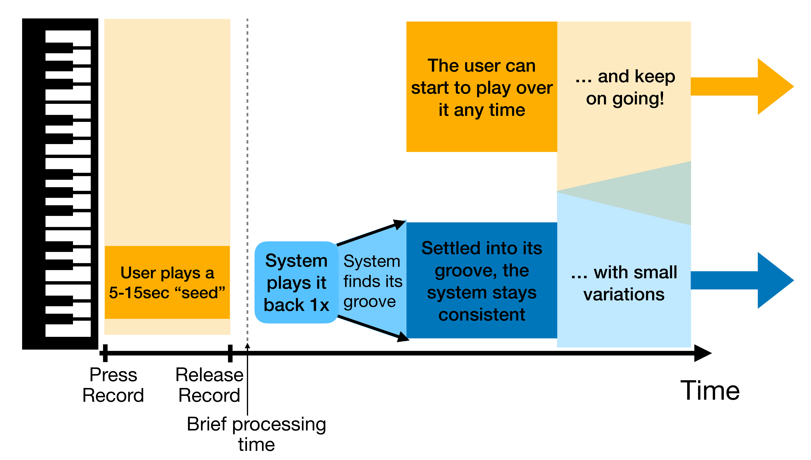

ISMIR · 2026
SmartLooper: a Framework for Personalized Human-AI Musical Improvisation
1 Dalhousie University, 2 Independent, 3 Vector Institute
Abstract
Real-time human-AI musical collaboration presents a persistent design challenge: AI contributions tend to be either too conservative to be interesting or too unpredictable to play along with. We posit that looping (and related practices of vamping and grooving) offers a framework that sidesteps this trade-off. These recurring structures bound variation within forms the musician already understands, and lets development accrue over musical rather than sample-level timescales; a balance upon which improvisers have long relied when playing with each other.
We present SmartLooper, a system for real-time human-AI piano improvisation built on this premise. The performer first assembles a personal corpus of their own loop-based recordings, giving them complete control over the stylistic space the system inhabits. SmartLooper segments this corpus into short loops and embeds them using pretrained MIDI models (selectable by the performer). In performance, the system improvises by retrieving loops from the corpus via a stochastic walk in embedding space: successive loops are chosen for proximity so that transitions feel continuous. The musician plays freely over this evolving bed, essentially playing a duet with themselves.
To broaden the corpus without diluting its character, we additionally train a small discriminator to distinguish degraded MIDI from samples in the personal corpus, and use it to filter synthetic loops generated by MIDI-GPT in the style of the corpus. The resulting dataset extension provides broader support for fluid transitions while preserving the performer's voice. SmartLooper has been used by professional musicians in over ten hours of live performance for audiences totaling more than a thousand listeners; we provide example recordings.
Method

Describe the essential idea
Keep the visible page selective. Link to the paper for complete derivations and use this area to explain the intuition behind the work.
Results
Citation
@article{SmartLooper,
title = {SmartLooper: a Framework for Personalized Human--AI Musical Improvisation},
author = {F. Miller, S. Oore, C. Sastry, M. da Silva, S. Dumpala, D. Oore, and S. Lowe},
journal = {Proc. of the 27th Int. Society for Music Information Retrieval Conf.},
year = {2026}
}